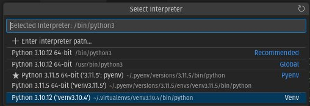

Environments
You need to install python first.
MGB's QTIM Standards courtesy of Chris Bridge give a good layout idea for us to follow.
Venv (virtualenv in python2)
Install pip
python3 -m pip install --user --upgrade pip
python3 -m pip --version
python3 -m pip install --user virtualenv
Create Virtual Environment
python3 -m venv env
bbearce@pop-os:~/Desktop/venv_demo$ python3 -m venv env
bbearce@pop-os:~/Desktop/venv_demo$ ls
env
bbearce@pop-os:~/Desktop/venv_demo$ source env/bin/activate
(env) bbearce@pop-os:~/Desktop/venv_demo$ deactivate
bbearce@pop-os:~/Desktop/venv_demo$ . env/bin/activate # abreviated
(env) bbearce@pop-os:~/Desktop/venv_demo$
Install Packages
python3 -m pip install pandas
python3 -m pip uninstall -y pandas
Short:
pip install pandas
pip uninstall -y pandas
(env) bbearce@pop-os:~/Desktop/venv_demo$ python3 -m pip install pandas
Looking in indexes: https://pypi.org/simple, https://packagecloud.io/github/git-lfs/pypi/simple
Collecting pandas
Obtaining dependency information for pandas from https://files.pythonhosted.org/packages/d9/26/895a49ebddb4211f2d777150f38ef9e538deff6df7e179a3624c663efc98/pandas-2.1.0-cp311-cp311-manylinux_2_17_x86_64.manylinux2014_x86_64.whl.metadata
Downloading pandas-2.1.0-cp311-cp311-manylinux_2_17_x86_64.manylinux2014_x86_64.whl.metadata (18 kB)
Collecting numpy>=1.23.2 (from pandas)
Obtaining dependency information for numpy>=1.23.2 from https://files.pythonhosted.org/packages/c4/36/161e2f8110f8c49e59f6107bd6da4257d30aff9f06373d0471811f73dcc5/numpy-1.26.0-cp311-cp311-manylinux_2_17_x86_64.manylinux2014_x86_64.whl.metadata
Downloading numpy-1.26.0-cp311-cp311-manylinux_2_17_x86_64.manylinux2014_x86_64.whl.metadata (58 kB)
━━━━━━━━━━━━━━━━━━━━━━━━━━━━━━━━━━━━━━ 58.5/58.5 kB 1.2 MB/s eta 0:00:00
Collecting python-dateutil>=2.8.2 (from pandas)
Using cached python_dateutil-2.8.2-py2.py3-none-any.whl (247 kB)
Collecting pytz>=2020.1 (from pandas)
Obtaining dependency information for pytz>=2020.1 from https://files.pythonhosted.org/packages/32/4d/aaf7eff5deb402fd9a24a1449a8119f00d74ae9c2efa79f8ef9994261fc2/pytz-2023.3.post1-py2.py3-none-any.whl.metadata
Downloading pytz-2023.3.post1-py2.py3-none-any.whl.metadata (22 kB)
Collecting tzdata>=2022.1 (from pandas)
Downloading tzdata-2023.3-py2.py3-none-any.whl (341 kB)
━━━━━━━━━━━━━━━━━━━━━━━━━━━━━━━━━━━━ 341.8/341.8 kB 8.4 MB/s eta 0:00:00
Collecting six>=1.5 (from python-dateutil>=2.8.2->pandas)
Using cached six-1.16.0-py2.py3-none-any.whl (11 kB)
Downloading pandas-2.1.0-cp311-cp311-manylinux_2_17_x86_64.manylinux2014_x86_64.whl (12.6 MB)
━━━━━━━━━━━━━━━━━━━━━━━━━━━━━━━━━━━━━━━ 12.6/12.6 MB 46.8 MB/s eta 0:00:00
Downloading numpy-1.26.0-cp311-cp311-manylinux_2_17_x86_64.manylinux2014_x86_64.whl (18.2 MB)
━━━━━━━━━━━━━━━━━━━━━━━━━━━━━━━━━━━━━━━ 18.2/18.2 MB 34.0 MB/s eta 0:00:00
Downloading pytz-2023.3.post1-py2.py3-none-any.whl (502 kB)
━━━━━━━━━━━━━━━━━━━━━━━━━━━━━━━━━━━━━ 502.5/502.5 kB 51.5 MB/s eta 0:00:00
Installing collected packages: pytz, tzdata, six, numpy, python-dateutil, pandas
Successfully installed numpy-1.26.0 pandas-2.1.0 python-dateutil-2.8.2 pytz-2
(env) bbearce@pop-os:~/Desktop/venv_demo$
(env) bbearce@pop-os:~/Desktop/venv_demo$ python3 -m pip uninstall -y pandas
Found existing installation: pandas 2.1.0
Uninstalling pandas-2.1.0:
Successfully uninstalled pandas-2.1.0
It's best practive to put virtual environments in ~/.virtualenvs. VSCode and other IDE's will look here by default for python virtual environments.
bbearce@pop-os:~/Desktop/venv_demo$ ls -la ~/.virtualenvs
total 16
drwxrwxr-x 4 bbearce bbearce 4096 Jul 22 2022 .
drwxr-xr-x 77 bbearce bbearce 4096 Sep 17 15:40 ..
drwxrwxr-x 6 bbearce bbearce 4096 Jul 22 2022 venv3.10.4
VSCode Example: 
Poetry
Install
curl -sSL https://install.python-poetry.org | python3 -
Uninstall
curl -sSL https://install.python-poetry.org | python3 - --uninstall
Version
$ poetry --version
Poetry (version 1.6.1)
Project Setup
cd ~/Desktop
poetry new poetry-demo
bbearce@terry:~/Desktop$ ls
poetry-demo
bbearce@terry:~/Desktop$ ls poetry-demo
poetry_demo poetry.lock pyproject.toml README.md tests
Dependencies
Store them under [tool.poetry.dependencies] in pyproject.toml:
[tool.poetry.dependencies]
python = "^3.10"
pendulum = "^2.1.2"
Install with poetry install:
bbearce@terry:~/Desktop/poetry-demo$ poetry install
Installing dependencies from lock file
No dependencies to install or update
Installing the current project: poetry-demo (0.1.0)
Adding Dependencies:
You can specify dependencies in pyproject.toml as above or use poetry's cli to add them:
poetry add pendulum
This makes a virtual environment automatically:
bbearce@terry:~/Desktop/poetry-demo$ poetry add pendulum
Creating virtualenv poetry-demo-yD2F6f32-py3.10 in /home/bbearce/.cache/pypoetry/virtualenvs
Using version ^2.1.2 for pendulum
Updating dependencies
Resolving dependencies... Downloading https://files.pythonhosted.org/packages/e0/4f/4474bda990ee740a020cbc3eb271925ef7daa7c844424
Resolving dependencies... (0.6s)
Package operations: 4 installs, 0 updates, 0 removals
• Installing six (1.16.0)
• Installing python-dateutil (2.8.2)
• Installing pytzdata (2020.1)
• Installing pendulum (2.1.2)
Writing lock file
By default, Poetry creates a virtual environment in {cache-dir}/virtualenvs. You can change the cache-dir value by editing the Poetry configuration. Additionally, you can use the virtualenvs.in-project configuration variable to create virtual environments within your project directory. Finally virtualenvs.create let's poetry know if you want it to create a virtualenv or not. If false, if it detects an already enabled virtual environment or an existing one in {cache-dir}/virtualenvs or {project-dir}/.venv it will install dependencies into them, otherwise it will install dependencies into the systems python environment. If a virtualenv isn't activated it will use system PATH and will use system python and or pyenv if that is what you are using.
We explore this a litte deeper below
Config
As mentioned above we can set these config variables:
cache-dir
virtualenvs.in-project
* virtualenvs.create
cache-dir
Type: string
Environment Variable: POETRY_CACHE_DIR
The path to the cache directory used by Poetry.
Defaults to one of the following directories:
- macOS: ~/Library/Caches/pypoetry
- Windows: C:\Users\
\AppData\Local\pypoetry\Cache - Unix: ~/.cache/pypoetry
ls ~/.cache/pypoetry
artifacts cache virtualenvs
See project envs:
bbearce@terry:~/Desktop/poetry-demo$ poetry env list
poetry-demo-yD2F6f32-py3.10 (Activated)
See project config:
bbearce@terry:~/Desktop/poetry-demo$ poetry config --list
cache-dir = "/home/bbearce/.cache/pypoetry"
experimental.system-git-client = false
installer.max-workers = null
installer.modern-installation = true
installer.no-binary = null
installer.parallel = true
virtualenvs.create = true
virtualenvs.in-project = null
virtualenvs.options.always-copy = false
virtualenvs.options.no-pip = false
virtualenvs.options.no-setuptools = false
virtualenvs.options.system-site-packages = false
virtualenvs.path = "{cache-dir}/virtualenvs" # /home/bbearce/.cache/pypoetry/virtualenvs
virtualenvs.prefer-active-python = false
virtualenvs.prompt = "{project_name}-py{python_version}"
Set project config:
poetry config cache-dir ./cache
bbearce@terry:~/Desktop/poetry-demo$ cat ~/.config/pypoetry/config.toml
cache-dir = "cache"
# reset
poetry config cache-dir /home/bbearce/.cache/pypoetry
virtualenvs.in-project
Type: boolean
Default: None
Environment Variable: POETRY_VIRTUALENVS_IN_PROJECT
Create the virtualenv inside the project’s root directory.
If not set explicitly, poetry by default will create a virtual environment under {cache-dir}/virtualenvs or use the {project-dir}/.venv directory if one already exists.
If set to true, the virtualenv will be created and expected in a folder named .venv within the root directory of the project.
poetry config virtualenvs.in-project true
poetry config virtualenvs.in-project false # to unset
Now install:
bbearce@pop-os:~/Desktop/poetry-demo$ poetry install
Installing dependencies from lock file
Package operations: 11 installs, 0 updates, 0 removals
• Installing six (1.16.0)
• Installing certifi (2023.7.22)
• Installing charset-normalizer (3.3.0)
• Installing idna (3.4)
• Installing numpy (1.26.0)
• Installing python-dateutil (2.8.2)
• Installing pytz (2023.3.post1)
• Installing tzdata (2023.3)
• Installing urllib3 (2.0.6)
• Installing pandas (2.1.1)
• Installing requests (2.31.0)
Installing the current project: poetry-demo (0.1.0)
bbearce@pop-os:~/Desktop/poetry-demo$ ls -la .venv/lib/python3.10/site-packages/ | grep pandas
drwxrwxr-x 15 bbearce bbearce 4096 Oct 7 18:16 pandas
drwxrwxr-x 2 bbearce bbearce 4096 Oct 7 18:16 pandas-2.1.1.dist-info
virtualenvs.create
This config setting tells poetry to make a virtualenv in ./.venv or {cache-dir}/virtualenvs. We've seen how to create venvs but lets' see what happens if we don't.
bearce@pop-os:~/Desktop/poetry-demo$ poetry config virtualenvs.create false
bbearce@pop-os:~/Desktop/poetry-demo$ poetry config --list
cache-dir = "/home/bbearce/.cache/pypoetry"
...
virtualenvs.create = false
virtualenvs.in-project = false
...
virtualenvs.path = "{cache-dir}/virtualenvs" # /home/bbearce/.cache/pypoetry/virtualenvs
...
In this mode poetry will use the first python on the PATH. This could be:
the system python
an activated virtual environment
* a local pyenv
* a global pyenv
* ...
Activate Virtual Environments
Source like normal:
bash: .venv/bin/activatae: No such file or directory
bbearce@pop-os:~/Desktop/poetry-demo$ source .venv/bin/activate
(poetry-demo-py3.10) bbearce@pop-os:~/Desktop/poetry-demo$
Or use poetry shell to activate the virtual environment within a nested shell.
bbearce@terry:~/Desktop/poetry-demo$ poetry shell
Spawning shell within /home/bbearce/.cache/pypoetry/virtualenvs/poetry-demo-yD2F6f32-py3.10
. /home/bbearce/.cache/pypoetry/virtualenvs/poetry-demo-yD2F6f32-py3.10/bin/activate
bbearce@terry:~/Desktop/poetry-demo$ . /home/bbearce/.cache/pypoetry/virtualenvs/poetry-demo-yD2F6f32-py3.10/bin/activate
# Deactivate with `exit`
(poetry-demo-py3.10) bbearce@terry:~/Desktop/poetry-demo$ exit
exit
To deactivate the virtual environment and exit this new shell type
exit. To deactivate the virtual environment without leaving the shell usedeactivate.
Git
Always commit both the pyproject.toml and poetry.lock files to your project.
Use Pyenv environments with Poetry
If you want to use pyenv with its virtualenv extension to manage virtual environments, but still leverage Poetry's caching mechanism for PyPI packages, you can follow these steps:
bbearce@pop-os:~/Desktop$ pyenv versions
* system (set by /home/bbearce/.pyenv/version)
3.10.4
bbearce@pop-os:~/Desktop$ pyenv virtualenv 3.10.4 venv3.10.4
bbearce@pop-os:~/Desktop$ pyenv versions
* system (set by /home/bbearce/.pyenv/version)
3.10.4
3.10.4/envs/venv3.10.4
venv3.10.4 --> /home/bbearce/.pyenv/versions/3.10.4/envs/venv3.10.4
bbearce@pop-os:~/Desktop$ poetry new poetry-demo
Created package poetry_demo in poetry-demo
bbearce@pop-os:~/Desktop$ cd poetry-demo/
bbearce@pop-os:~/Desktop/poetry-demo$ poetry config virtualenvs.create false
bbearce@pop-os:~/Desktop/poetry-demo$ poetry config virtualenvs.in-project false
bbearce@pop-os:~/Desktop/poetry-demo$ pyenv activate venv3.10.4
(venv3.10.4) bbearce@pop-os:~/Desktop/poetry-demo$ poetry add requests
Using version ^2.31.0 for requests
Updating dependencies
Resolving dependencies... (0.2s)
Package operations: 5 installs, 0 updates, 0 removals
• Installing certifi (2023.7.22)
• Installing charset-normalizer (3.3.0)
• Installing idna (3.4)
• Installing urllib3 (2.0.6)
• Installing requests (2.31.0)
Writing lock file
(venv3.10.4) bbearce@pop-os:~/Desktop/poetry-demo$ python
Python 3.10.4 (main, Oct 7 2023, 16:49:10) [GCC 11.4.0] on linux
Type "help", "copyright", "credits" or "license" for more information.
>>> import requests
>>> import sys
>>> sys.executable
'/home/bbearce/.pyenv/versions/venv3.10.4/bin/python'
>>>
Pyenv
Official Docs
realpython.com (they use the above to guide you)
If venv was manual, pyenv is automatic and steamlined to create many different environments and virtual environments.
When you use venv you are copying your main python installation into a virtual environment. You are locked into that version for virtual environements unless you manually install different python versions on your system.
With pyenv, you do have to have these base python environments, but instead of installing where they normally go on your os, they are collected and managed by pyenv in ~/.pyenv/versions:
bbearce@pop-os:~/Desktop/venv_demo$ ls -la ~/.pyenv
-rw-r--r-- 1 bbearce bbearce 7 Sep 16 16:02 version
drwxr-xr-x 3 bbearce bbearce 4096 Sep 16 16:29 versions
...
bbearce@pop-os:~/Desktop/venv_demo$ ls ~/.pyenv/versions
3.11.5 venv3.11.5
Via special pyenv bash scripts, not python installations as with venv above, we can install multiple python versions (3.11.5) and virtual environments(venv3.11.5). They live in the same directory, though the virtual environments are sylinks to ./envs/ under each actual python version.
bbearce@pop-os:~/Desktop/venv_demo$ ls -la ~/.pyenv/versions/
drwxr-xr-x 7 bbearce bbearce 4096 Sep 16 16:29 3.11.5
lrwxrwxrwx 1 bbearce bbearce 52 Sep 16 16:29 venv3.11.5 -> /home/bbearce/.pyenv/versions/3.11.5/envs/venv3.11.5
bbearce@pop-os:~/Desktop/venv_demo$ ls -la ~/.pyenv/versions/3.11.5/envs/
drwxr-xr-x 5 bbearce bbearce 4096 Sep 16 16:29 venv3.11.5
So you can have any python version with any number of unique virtual environments.
Create (install) Environment
See environments availabe:
pyenv install --list # all
pyenv install --list | grep " 3\.[678]" # get specific
3.6.0
3.6-dev
3.6.1
3.6.2
3.6.3
3.6.4
3.6.5
3.6.6
3.6.7
3.6.8
3.7.0
3.7-dev
3.7.1
3.7.2
3.8-dev
pyenv install 3.10.4
# pyenv uninstall 3.10.4 # Uninstall
# rm -rf ~/.pyenv/versions/3.10.4 # Equivalent
bbearce@pop-os:~/Desktop/venv_demo$ pyenv install 3.10.4
Downloading Python-3.10.4.tar.xz...
-> https://www.python.org/ftp/python/3.10.4/Python-3.10.4.tar.xz
Installing Python-3.10.4...
...
Installing Python-3.10.4...
Installed Python-3.10.4 to /home/bbearce/.pyenv/versions/3.10.4
bbearce@pop-os:~/Desktop/venv_demo$ ls -la ~/.pyenv/versions
drwxr-xr-x 6 bbearce bbearce 4096 Sep 17 17:03 3.10.4
drwxr-xr-x 7 bbearce bbearce 4096 Sep 16 16:29 3.11.5
lrwxrwxrwx 1 bbearce bbearce 52 Sep 16 16:29 venv3.11.5 -> /home/bbearce/.pyenv/versions/3.11.5/envs/venv3.11.5
Create Virtual Environment
You need a pyenv plugin called pyenv-virtualenv.
# Ubuntu based install...check for your os
git clone https://github.com/pyenv/pyenv-virtualenv.git $(pyenv root)/plugins/pyenv-virtualenv
Create:
bbearce@pop-os:~/Desktop/venv_demo$ pyenv virtualenv 3.10.4 <venv-name>
bbearce@pop-os:~/Desktop/venv_demo$ ls -la ~/.pyenv/versions
drwxr-xr-x 6 bbearce bbearce 4096 Sep 17 17:03 3.10.4
drwxr-xr-x 7 bbearce bbearce 4096 Sep 16 16:29 3.11.5
lrwxrwxrwx 1 bbearce bbearce 52 Sep 16 16:29 venv3.11.5 -> /home/bbearce/.pyenv/versions/3.11.5/envs/venv3.11.5
bbearce@pop-os:~/Desktop/venv_demo$ pyenv virtualenv 3.10.4 venv3.10.4
bbearce@pop-os:~/Desktop/venv_demo$ ls -la ~/.pyenv/versions
drwxr-xr-x 7 bbearce bbearce 4096 Sep 17 17:19 3.10.4
drwxr-xr-x 7 bbearce bbearce 4096 Sep 16 16:29 3.11.5
lrwxrwxrwx 1 bbearce bbearce 52 Sep 17 17:19 venv3.10.4 -> /home/bbearce/.pyenv/versions/3.10.4/envs/venv3.10.4
lrwxrwxrwx 1 bbearce bbearce 52 Sep 16 16:29 venv3.11.5 -> /home/bbearce/.pyenv/versions/3.11.5/envs/venv3.11.5
Using Environments
There are a variety of ways to specify when and which env\venv you want to use. Here are the most basic.
Global
By default you are using a global pyenv version specified by a file in ~/.pyenv/version.
bbearce@pop-os:~/Desktop/venv_demo$ cat ~/.pyenv/version
3.11.5
Set it with:
pyenv global <version>
bbearce@pop-os:~/Desktop/venv_demo$ pyenv version
3.11.5 (set by /home/bbearce/.pyenv/version)
bbearce@pop-os:~/Desktop/venv_demo$ pyenv versions
system
3.10.4
3.10.4/envs/venv3.10.4
* 3.11.5 (set by /home/bbearce/.pyenv/version)
3.11.5/envs/venv3.11.5
venv3.10.4 --> /home/bbearce/.pyenv/versions/3.10.4/envs/venv3.10.4
venv3.11.5 --> /home/bbearce/.pyenv/versions/3.11.5/envs/venv3.11.5
bbearce@pop-os:~/Desktop/venv_demo$ python
Python 3.11.5 (main, Sep 16 2023, 15:49:34) [GCC 11.4.0] on linux
Type "help", "copyright", "credits" or "license" for more information.
>>>
Shell
Activates for quick use (essentially the same as venv).
pyenv shell <version>
Regular env:
bbearce@pop-os:~/Desktop/venv_demo$ pyenv shell 3.11.5
bbearce@pop-os:~/Desktop/venv_demo$ pyenv version
3.11.5 (set by PYENV_VERSION environment variable)
Virtualenv:
pyenv activate <version>
pyenv deactivate
bbearce@pop-os:~/Desktop/venv_demo$ pyenv activate venv3.11.5
(venv3.11.5) bbearce@pop-os:~/Desktop/venv_demo$ pyenv version
venv3.11.5 (set by PYENV_VERSION environment variable)
(venv3.11.5) bbearce@pop-os:~/Desktop/venv_demo$ pyenv deactivate
bbearce@pop-os:~/Desktop/venv_demo$
You can use these with shell too.
bbearce@pop-os:~/Desktop/venv_demo$ pyenv shell venv3.11.5
(venv3.11.5) bbearce@pop-os:~/Desktop/venv_demo$ pyenv version
venv3.11.5 (set by PYENV_VERSION environment variable)
However deactivate doesn't work:
(venv3.11.5) bbearce@pop-os:~/Desktop/venv_demo$ pyenv deactivate
bbearce@pop-os:~/Desktop/venv_demo$ pyenv shell venv3.11.5
(venv3.11.5) bbearce@pop-os:~/Desktop/venv_demo$ pyenv deactivate
(venv3.11.5) bbearce@pop-os:~/Desktop/venv_demo$ deactivate
pyenv-virtualenv: deactivate must be sourced. Run 'source deactivate' instead of 'deactivate'
(venv3.11.5) bbearce@pop-os:~/Desktop/venv_demo$ source deactivate
pyenv-virtualenv: deactivate 3.11.5/envs/venv3.11.5
# Need to use shell again to switch
(venv3.11.5) bbearce@pop-os:~/Desktop/venv_demo$ pyenv shell 3.11.5
Local
This is set for a direcory or project and creates a .python-version inside the directory
pyenv local <version>
bbearce@pop-os:~/Desktop/venv_demo$ pyenv version
3.11.5 (set by /home/bbearce/.pyenv/version)
bbearce@pop-os:~/Desktop/venv_demo$ pyenv local venv3.11.5
(venv3.11.5) bbearce@pop-os:~/Desktop/venv_demo$ ls -la
drwxrwxr-x 5 bbearce bbearce 4096 Sep 17 15:32 env
-rw-rw-r-- 1 bbearce bbearce 11 Sep 17 17:29 .python-version
-rw-rw-r-- 1 bbearce bbearce 22572 Sep 17 15:48 vscode-venv.jpg
(venv3.11.5) bbearce@pop-os:~/Desktop/venv_demo$ cat .python-version
venv3.11.5
(venv3.11.5) bbearce@pop-os:~/Desktop/venv_demo$ pyenv version
venv3.11.5 (set by /home/bbearce/Desktop/venv_demo/.python-version)
(venv3.11.5) bbearce@pop-os:~/Desktop/venv_demo$ rm .python-version # deactivates and removes .python-version
bbearce@pop-os:~/Desktop/venv_demo$
PDM
Warning: PEP 582 has been rejected
PDM was created to mimic npm whereby you don't need virtualenvs. All you need are base pythons and __pypackages__. Instead of bundling your packages with venvs, which are copies of base environmetns, why don't we use a single 3.11.5 and have projects with packages that all use the same base 3.11.5 version or any other version you'd like.
PS: You can and unfortunately should use vitualenvs with pdm as PEP 582 has been rejected which was the whole point. Nonetheless this package manager is nice and organized. It uses .toml files like Poetry to manage depedencies so it is nice still.
Install
# Linux\Mac
curl -sSL https://pdm.fming.dev/install-pdm.py | python3 -
New Project
mkdir ~/Documents/pdm_setup_and_experimentation && cd ~/Documents/pdm_setup_and_experimentation
pdm init
Virtualenvs and not PEP 582
You can choose the backend used by PDM to create a virtualenv. Currently it supports three backends:
- virtualenv(default)
- venv
- conda
Local Virtual Environment
bbearce@pop-os:~/Documents/pdm_setup_and_experimentation$ pdm init
Creating a pyproject.toml for PDM...
Please enter the Python interpreter to use
0. /home/bbearce/.pyenv/shims/python3 (3.11)
1. /home/bbearce/.pyenv/versions/3.11.5/bin/python (3.11)
2. /home/bbearce/.pyenv/versions/3.11.5/bin/python3.11 (3.11)
3. /home/bbearce/.pyenv/shims/python3.11 (3.11)
4. /home/bbearce/.pyenv/shims/python (3.11)
5. /home/bbearce/.pyenv/shims/python3.10 (3.10)
6. /usr/bin/python3.10 (3.10)
7. /home/bbearce/.pyenv/versions/3.10.4/bin/python3.10 (3.10)
Please select (0): 6
Would you like to create a virtualenv with /usr/bin/python3.10? [y/n] (y): y
Virtualenv is created successfully at /home/bbearce/Documents/pdm_setup_and_experimentation/.venv
Is the project a library that is installable?
If yes, we will need to ask a few more questions to include the project name and build backend [y/n] (n): n
License(SPDX name) (MIT):
Author name (Benjamin Bearce):
Author email (bbearce@gmail.com):
Python requires('*' to allow any) (>=3.10):
Project is initialized successfully
We can use any environment (regular or virtual) to start this project, including virtual ones we make upon running
pdm init.
We can see the .venv directory which was made from /usr/bin/python3.10.
bbearce@pop-os:~/Documents/pdm_setup_and_experimentation$ ls -la
total 40
drwxrwxr-x 6 bbearce bbearce 4096 Sep 17 18:25 .
drwxr-xr-x 36 bbearce bbearce 4096 Sep 17 14:17 ..
-rw-r--r-- 1 bbearce bbearce 3102 Sep 17 13:47 .gitignore
-rw-rw-r-- 1 bbearce bbearce 69 Sep 17 18:24 .pdm-python
drwxrwxr-x 2 bbearce bbearce 4096 Sep 17 18:25 __pycache__
-rw-rw-r-- 1 bbearce bbearce 217 Sep 17 18:25 pyproject.toml
-rw-r--r-- 1 bbearce bbearce 18 Sep 17 13:47 README.md
drwxrwxr-x 3 bbearce bbearce 4096 Sep 17 18:25 src
drwxrwxr-x 3 bbearce bbearce 4096 Sep 17 18:25 tests
drwxrwxr-x 4 bbearce bbearce 4096 Sep 17 18:24 .venv
PDM Info:
If Project Packages is None (as show below by it not being present), virtualenv mode is enabled.
bbearce@pop-os:~/Documents/pdm_setup_and_experimentation$ pdm info
PDM version:
2.9.2
Python Interpreter:
/home/bbearce/Documents/pdm_setup_and_experimentation/.venv/bin/python (3.10)
Project Root:
/home/bbearce/Documents/pdm_setup_and_experimentation
Local Packages:
bbearce@pop-os:~/Documents/pdm_setup_and_experimentation$ pdm info --env
{
"implementation_name": "cpython",
"implementation_version": "3.10.12",
"os_name": "posix",
"platform_machine": "x86_64",
"platform_release": "6.4.6-76060406-generic",
"platform_system": "Linux",
"platform_version": "#202307241739~1694621917~22.04~ac5e1a8 SMP PREEMPT_DYNAMIC Wed S",
"python_full_version": "3.10.12",
"platform_python_implementation": "CPython",
"python_version": "3.10",
"sys_platform": "linux"
}
Create Your Own Virtual Environment
# Create a virtualenv based on 3.8 interpreter
$ pdm venv create 3.8
# Assign a different name other than the version string
$ pdm venv create --name for-test 3.8
# Use venv as the backend to create, support 3 backends: virtualenv(default), venv, conda
$ pdm venv create --with venv 3.9
Notice you need an interpreter installed to use correctly:
bbearce@pop-os:~/Documents/pdm_setup_and_experimentation$ pdm venv create 3.8
[VirtualenvCreateError]: Can't resolve python interpreter 3.8
bbearce@pop-os:~/Documents/pdm_setup_and_experimentation$ pdm venv create --name for-test 3.8
[VirtualenvCreateError]: Can't resolve python interpreter 3.8
bbearce@pop-os:~/Documents/pdm_setup_and_experimentation$ pdm venv create --with venv 3.9
[VirtualenvCreateError]: Can't resolve python interpreter 3.9
Use 3.11.5 that we have:
bbearce@pop-os:~/Documents/pdm_setup_and_experimentation$ pdm venv create 3.11.5
Virtualenv /home/bbearce/Documents/pdm_setup_and_experimentation/.venv is created successfully
bbearce@pop-os:~/Documents/pdm_setup_and_experimentation$ ls -la
total 44
drwxrwxr-x 6 bbearce bbearce 4096 Sep 17 19:00 .
drwxr-xr-x 36 bbearce bbearce 4096 Sep 17 14:17 ..
-rw-r--r-- 1 bbearce bbearce 3102 Sep 17 13:47 .gitignore
-rw-rw-r-- 1 bbearce bbearce 8119 Sep 17 18:39 pdm.lock
drwxrwxr-x 2 bbearce bbearce 4096 Sep 17 18:25 __pycache__
-rw-rw-r-- 1 bbearce bbearce 239 Sep 17 18:39 pyproject.toml
-rw-r--r-- 1 bbearce bbearce 18 Sep 17 13:47 README.md
drwxrwxr-x 3 bbearce bbearce 4096 Sep 17 18:25 src
drwxrwxr-x 3 bbearce bbearce 4096 Sep 17 18:25 tests
drwxrwxr-x 4 bbearce bbearce 4096 Sep 17 19:00 .venv
bbearce@pop-os:~/Documents/pdm_setup_and_experimentation$
bbearce@pop-os:~/Documents/pdm_setup_and_experimentation$ pdm venv create --name for-test 3.11.5
Virtualenv /home/bbearce/.local/share/pdm/venvs/pdm_setup_and_experimentation-wABLsGD0-for-test is created successfully
bbearce@pop-os:~/Documents/pdm_setup_and_experimentation$ pdm venv create --with venv 3.11.5
Virtualenv /home/bbearce/Documents/pdm_setup_and_experimentation/.venv is created successfully
Reuse the virtualenv you created elsewhere:
This will create file .pdm-python:
pdm use -f /home/bbearce/.local/share/pdm/venvs/pdm_setup_and_experimentation-wABLsGD0-for-test
bbearce@pop-os:~/Documents/pdm_setup_and_experimentation$ cat .pdm-python
/home/bbearce/.local/share/pdm/venvs/pdm_setup_and_experimentation-wABLsGD0-for-test/bin/python3
List all virtualenvs created with this projects:
bbearce@pop-os:~/Documents/pdm_setup_and_experimentation$ pdm venv list
Virtualenvs created with this project:
- in-project: /home/bbearce/Documents/pdm_setup_and_experimentation/.venv
* for-test: /home/bbearce/.local/share/pdm/venvs/pdm_setup_and_experimentation-wABLsGD0-for-test
Remove a virtualenv:
pdm venv remove for-test
Activate a virtualenv:
eval $(pdm venv activate)
bbearce@pop-os:~/Documents/pdm_setup_and_experimentation$ eval $(pdm venv activate)
(pdm_setup_and_experimentation-3.11) bbearce@pop-os:~/Documents/pdm_setup_and_experimentation$
bbearce@pop-os:~/Documents/pdm_setup_and_experimentation$ which python
/home/bbearce/Documents/pdm_setup_and_experimentation/.venv/bin/python
bbearce@pop-os:~/Documents/pdm_setup_and_experimentation$ eval $(pdm venv activate for-test)
(pdm_setup_and_experimentation-3.11) bbearce@pop-os:~/Documents/pdm_setup_and_experimentation$ which python
/home/bbearce/.local/share/pdm/venvs/pdm_setup_and_experimentation-wABLsGD0-for-test/bin/python
Remember the python interpreter you are using in this project is set in
.pdm-python
PEP 582
Don't make a virtualenv:
bbearce@pop-os:~/Documents/pdm_setup_and_experimentation$ pdm init
Creating a pyproject.toml for PDM...
Please enter the Python interpreter to use
0. /home/bbearce/.pyenv/shims/python3 (3.11)
1. /home/bbearce/.pyenv/versions/3.11.5/bin/python (3.11)
2. /home/bbearce/.local/share/pdm/venvs/pdm_setup_and_experimentation-wABLsGD0-for-test/bin/python (3.11)
3. /home/bbearce/.pyenv/versions/3.11.5/bin/python3.11 (3.11)
4. /home/bbearce/.pyenv/shims/python3.11 (3.11)
5. /home/bbearce/.pyenv/shims/python (3.11)
6. /home/bbearce/.pyenv/shims/python3.10 (3.10)
7. /usr/bin/python3.10 (3.10)
8. /home/bbearce/.pyenv/versions/3.10.4/bin/python3.10 (3.10)
Please select (0): 7
Would you like to create a virtualenv with /usr/bin/python3.10? [y/n] (y): n
You are using the PEP 582 mode, no virtualenv is created.
For more info, please visit https://peps.python.org/pep-0582/
Is the project a library that is installable?
If yes, we will need to ask a few more questions to include the project name and build backend [y/n] (n): n
License(SPDX name) (MIT):
Author name (Benjamin Bearce):
Author email (bbearce@gmail.com):
Python requires('*' to allow any) (>=3.10):
Project is initialized successfully
Notice there is no .venv directory:
bbearce@pop-os:~/Documents/pdm_setup_and_experimentation$ cat .pdm-python
/usr/bin/python3.10
bbearce@pop-os:~/Documents/pdm_setup_and_experimentation$ ls -la
-rw-r--r-- 1 bbearce bbearce 3102 Sep 17 13:47 .gitignore
-rw-rw-r-- 1 bbearce bbearce 19 Sep 17 19:17 .pdm-python
drwxrwxr-x 2 bbearce bbearce 4096 Sep 17 19:17 __pycache__
-rw-rw-r-- 1 bbearce bbearce 217 Sep 17 19:17 pyproject.toml
-rw-r--r-- 1 bbearce bbearce 18 Sep 17 13:47 README.md
drwxrwxr-x 3 bbearce bbearce 4096 Sep 17 19:17 src
drwxrwxr-x 3 bbearce bbearce 4096 Sep 17 19:17 tests
Manage Depedencies
pdm add <dependency>
pdm add pandas
Let's look at the files used to manage this project:
pyproject.toml: Overall project management (check into git)
bbearce@pop-os:~/Documents/pdm_setup_and_experimentation$ cat pyproject.toml
[project]
name = ""
version = ""
description = ""
authors = [
{name = "Benjamin Bearce", email = "bbearce@gmail.com"},
]
dependencies = [
"pandas>=2.1.0",
]
requires-python = ">=3.10"
readme = "README.md"
license = {text = "MIT"}
pdm.lock: All pandas (and or others as needed) dependencies are recorded and are not to be touched (check into git)
bbearce@pop-os:~/Documents/pdm_setup_and_experimentation$ cat pdm.lock
# This file is @generated by PDM.
# It is not intended for manual editing.
[metadata]
groups = ["default"]
cross_platform = true
static_urls = false
lock_version = "4.3"
content_hash = "sha256:dc9eafceda8a739aabf7f0d33d89566090337630b57dbc7a482740a5b8863523"
[[package]]
name = "numpy"
version = "1.26.0"
requires_python = "<3.13,>=3.9"
summary = "Fundamental package for array computing in Python"
files = [
...
.pdm-python: Interpreter (do not check into git)
cat .pdm-python
/usr/local/bin/python3.11
pdm list
bbearce@pop-os:~/Documents/pdm_setup_and_experimentation$ pdm list
╭─────────────────┬──────────────┬──────────╮
│ name │ version │ location │
├─────────────────┼──────────────┼──────────┤
│ numpy │ 1.26.0 │ │
│ pytz │ 2023.3.post1 │ │
│ six │ 1.16.0 │ │
│ tzdata │ 2023.3 │ │
│ pandas │ 2.1.0 │ │
│ python-dateutil │ 2.8.2 │ │
╰─────────────────┴──────────────┴──────────╯
bbearce@pop-os:~/Documents/pdm_setup_and_experimentation$ pdm list --graph
pandas 2.1.0 [ required: >=2.1.0 ]
├── numpy 1.26.0 [ required: >=1.22.4 ]
├── python-dateutil 2.8.2 [ required: >=2.8.2 ]
│ └── six 1.16.0 [ required: >=1.5 ]
├── pytz 2023.3.post1 [ required: >=2020.1 ]
└── tzdata 2023.3 [ required: >=2022.1 ]
Using Python:
Packages with venv
When in this mode packages are in .venv/site-pypackages:
bbearce@terry:~/Documents/pdm_setup_and_experimentation$ tree -L 3 .venv/lib
.venv/lib
└── python3.10
└── site-packages
├── dateutil
├── numpy
├── numpy-1.26.0.dist-info
├── numpy.libs
├── pandas
├── pandas-2.1.0.dist-info
├── __pycache__
├── python_dateutil-2.8.2.dist-info
├── pytz
├── pytz-2023.3.post1.dist-info
├── six-1.16.0.dist-info
├── six.py
├── tzdata
├── tzdata-2023.3.dist-info
├── _virtualenv.pth
└── _virtualenv.py
Packages with PEP 582
When in this mode packages are in __pypackages__:
bbearce@terry:~/Documents/pdm_setup_and_experimentation$ tree -L 3 __pypackages__
__pypackages__
└── 3.10
├── bin
│ └── f2py
├── include
└── lib
├── dateutil
├── numpy
├── numpy-1.26.0.dist-info
├── numpy.libs
├── pandas
├── pandas-2.1.0.dist-info
├── python_dateutil-2.8.2.dist-info
├── pytz
├── pytz-2023.3.post1.dist-info
├── six-1.16.0.dist-info
├── six.py
├── tzdata
└── tzdata-2023.3.dist-info
If using a pdm created venv with a name in ~/.local/share/pdm/venvs/ then packages would be under ~/.local/share/pdm/venvs/<venv name>/site-packages.
When in this mode if you want a shell using this projects packages and interpreter you use pdm run python:
bbearce@terry:~/Documents/pdm_setup_and_experimentation$ pdm run python
Python 3.10.6 (main, Mar 10 2023, 10:55:28) [GCC 11.3.0] on linux
Type "help", "copyright", "credits" or "license" for more information.
>>> import pandas
>>> pandas
<module 'pandas' from '/home/bbearce/Documents/pdm_setup_and_experimentation/__pypackages__/3.10/lib/pandas/__init__.py'>
Notice without pdm run, your system starts the same interpreter but doesn't have packages installed:
bbearce@terry:~/Documents/pdm_setup_and_experimentation$ python3
Python 3.10.6 (main, Mar 10 2023, 10:55:28) [GCC 11.3.0] on linux
Type "help", "copyright", "credits" or "license" for more information.
>>> import pandas
Traceback (most recent call last):
File "<stdin>", line 1, in <module>
ModuleNotFoundError: No module named 'pandas'